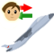

How to Build Your First Moon Base
Your first moon base is challenging because a space rocket is the only vehicle available to get it started. The space rocket is difficult to maneuver and cargo space is limited.
This topic assumes you have built a city on a habitable planet that is manufacturing space rockets, such as a new emperor's home planet. That city will be called the home city. Read How To Build Your First City if you have not built a home city
Home City Infrastructure
Prepare the home city to support a moon base. Build up the infrastructure that is needed in the home city before you go to the moon.
Build an airport terminal in the home city.
Build a broker in the home city.
The moon base will consume a large amount of air.
Build an eight-level refinery in the home city. Set the refinery to manufacture air. There are several processes for making air. Select Air using Atmosphere to collect breathable air directly from the atmosphere. By the way, this process does not require a breathable atmosphere; it can be used in a harsh atmosphere to extract breathable components.
Build wells and treatment plants to produce water. Water wells can be dug anywhere on the terrain, no specific geological formation is required. Treatment plants can be built on the coast and on land. A treatment plant on land requires a source of ice to convert to water. Ice is mined where ice is present on the terrain.
The airless environment of the moon will be deadly. Build a two-level armorer. Set one level to make environment suits and set the other level to make environment suit helmets.
Go to a retail store and purchase an environment suit and a helmet. Read Buying and Selling Personal Items for more information. An environment suit isn't essential if you can't afford it.
Finally, build a pharmaceutical lab to make medical kits. A medical kit is not essential but it is a cheap alternative if you cannot afford an environment suit. You'll need to heal yourself a lot.
The home city now has the infrastructure necessary to support a moon base.
Prepare For The Journey
Plan to carry everything you need to build an airport terminal and a broker on the moon in one trip. Those two buildings are needed to connect the new moon base with the home city.
The Construction window shows what is required to build each building. When a building is selected, the Construction Materials section shows a list of commodity icons. The tooltip on the construction commodity icons shows the actual number of each commodity needed to build the building in the current environment.
Items Required to Construct a Moon Base
| Item | Town Square | Airport Terminal on Moon | Broker on Moon | Total | Total With Spares |
|---|---|---|---|---|---|
| Mechanical Part | 10 | 0 | 10 | 10 | 12 |
| Plastic | 0 | 14 | 2 | 16 | 20 |
| Textiles | 0 | 24 | 0 | 24 | 30 |
| Hammer | 0 | 1 | 0 | 1 | 2 |
| Soldering Iron | 0 | 1 | 0 | 1 | 2 |
Fly a space rocket to the retail store in the home city.
Exit the rocket so you can shop at the retail store; don't walk far from the rocket. Buy three crates. Build a carpenter or a plastic factory if necessary to manufacture crates.
Buy all of the materials needed to build the airport terminal and the broker on the moon. Buy spares of each due to the failure rate of materials when fetched.
If you can't afford all of this stuff, don't buy the stone. It can be foraged from the ground on the moon. Read Foraging From the Environment for more information.
Get into the rocket.
By the way,
Blast Off
Fly the rocket to a moon or other planet.
Locate eludium and lumenite. They are mineral resources so they will be labeled in top-down view.
Ice is valuable if you find it. Colder moons will often have ice patches.
Radioactives provide fuel for nuclear power. The presense of radioactives is a positive factor when selecting a location for the moon base, if you intend to build nuclear power plants.
Small distant planets can be difficult to spot. They are easier to spot when the rocket is moving very fast. Look around when moving quickly and the smaller planets will be more apparent.
The fuel cell on the rocket lasts 20 minutes. If you explore your solar system using a rocket, bring extra hydrogen with you.
Moon Base Alpha
"John Madden" - Astronaut
Land on the moon at the site you selected for the moon base.
Switch to top-down view and build the town square of the moon base a short distance from the rocket but not beneath the rocket.
Build a road beneath the rocket. The Labor window can be used to do the work without exiting the rocket.
On the Comm window, press the Debark Passengers button to unload the colonist.
Build an airport terminal on the terrain next to the road slab. Lift off with the rocket and land on the airport terminal construction site.
Move a hammer and a soldering iron into your ready inventory. Your ready inventory is any inventory position that is not inside a container.
Be sure your environment suit is on and your helmet visor is closed before exiting the rocket.
If you do not have an environment suit, prepare to perform the next step quickly.
Exit the rocket. Drop all three crates of construction materials where you are standing. Get back into the rocket.
On the Labor window, press the Work Construction Site button.
Exit the rocket. The air inside all building sites is breathable without an environment suit. Pick up the crates. Get back into the rocket.
Use the Construction window to build a broker. Fly the rocket to the broker construction site and build it the same way you built the airport terminal, using the materials in the crates.
The new moon base is now connected to the home city. It may take a few minutes for the first shipment of supplies to arrive.
Growth Tips
Unlike a habitable environment,
Build mines to extract eludium and lumenite.
Lumenite mining requires tongs, a tool your city may not be manufacturing. When a building is selected on the Construction window, information about the building is shown at the lower portion of the window. The manufacturing process for the building can be selected using a combo box at the bottom.
Add homes to the moon base by building houses, apartments or condominiums. Homes are needed for the population to grow.
Build a power plant. Power is needed for life support.
Build a refinery. Set the refinery to make air from water.
Food production consumes precious water. Imported food is usually sufficient.
Remaining jobs are allocated after power plant, refinery, and food production jobs are filled.
Next (HowTos/Buying and Selling Cargo) ->